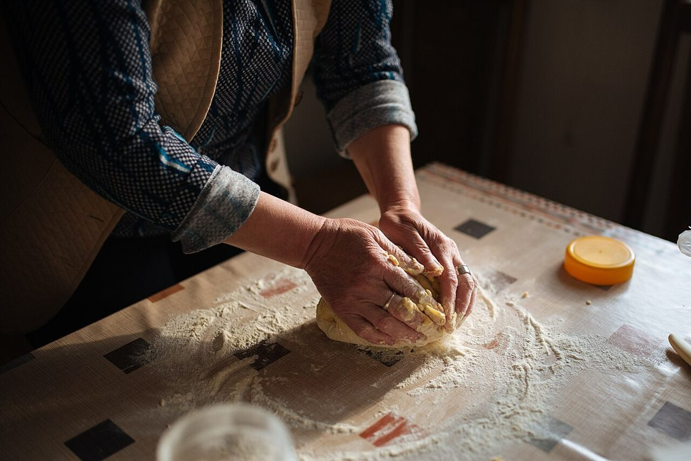
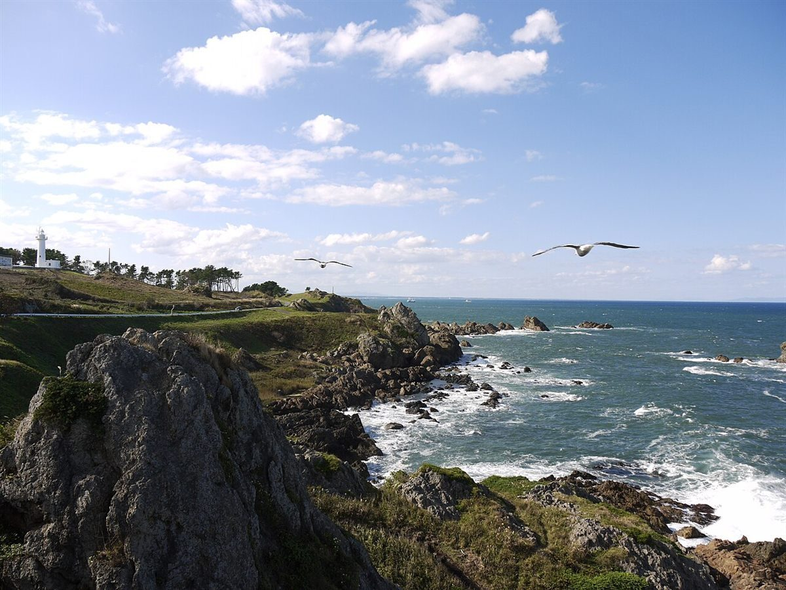

About
店のこと
このページの文章は、お店から聞いた話ではなく、制作側が想像して書いたものです。事実と異なる場合は、お店の言葉に差し替えます。
制作側が想像して書いた
こねる時間を思う
店名に「天然酵母のベーグルと焼菓子」とあります。酵母の生地は、ゆっくり育てるもの。そんな時間を、手でこねる場面に重ねて想像しました。実際の作り方やこだわりは、お店のお話をうかがって書き直します。

制作側が想像して書いた
浅根という場所
お店の所在地は、気仙沼市浅根です。海辺の町の一角、というくらいしか、制作側には分かりません。ここでは「海と原っぱが近い景色」を思い浮かべ、写真は国内他地域のイメージを並べました。


写真は気仙沼市の風景ではありません。いずれも青森県の海辺のイメージです。
店の基本情報
確認できていること
| 店名 | うさぎのはら 天然酵母のベーグルと焼菓子 |
|---|---|
| 所在地 | 〒988-0623 宮城県気仙沼市浅根135 |
| 営業時間 | 準備中 |
| 定休日 | 準備中 |